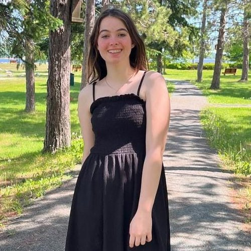

CONHEÇA A DELICIOSA CONEXÃO CAMPO CIDADE
OBJETIVO
Apresentar como o alimento produzido no campo é utilizado diretamente na cidade por meio de receitas tradicionais.
RECEITAS


AGRADECIMENTOS
primeiramente, muito obrigada a você leitor, por visitar este site.
agradeço também, a professora orientadora do projeto: maria clara sampaio, por me auxiliar na produção deste.
ademais agradeço ao sistema faep, ao programa agrinho 2025 e a secretaria de educação do paraná pela oportunidade de desenvolver habilidades de programação e reconhecer os benefícios da conexão campo cidade.
CONTATO

ana júlia garcia molinari
17 anos
maringá
colégio de aplicação pedagógica da universidade estadual de maringá
a.molinari@escola.pr.gov.br